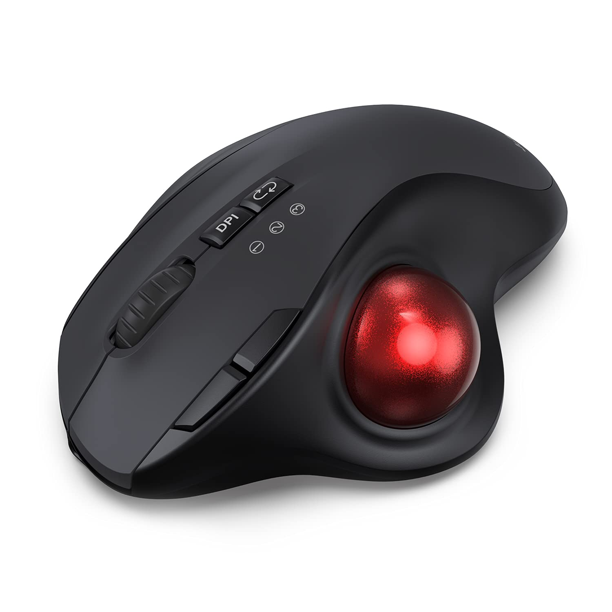
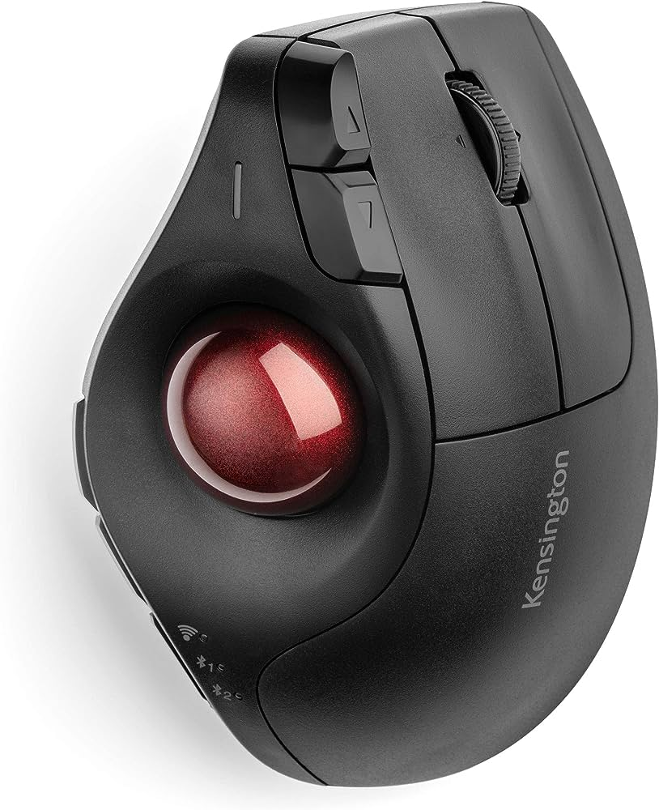
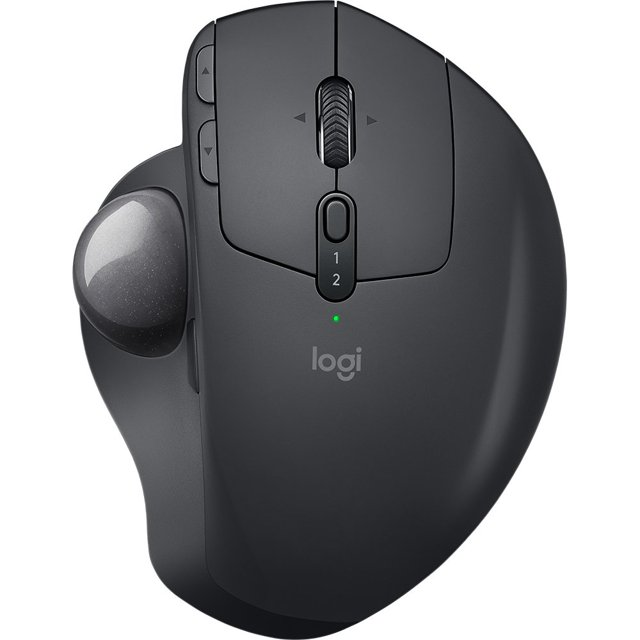
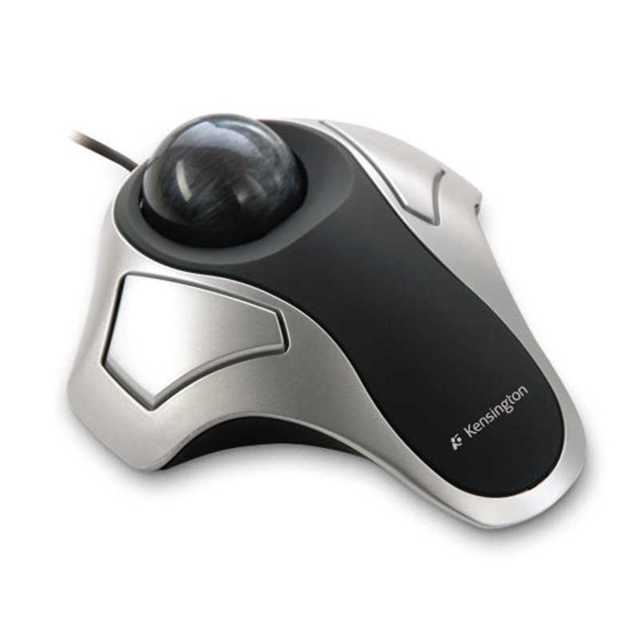
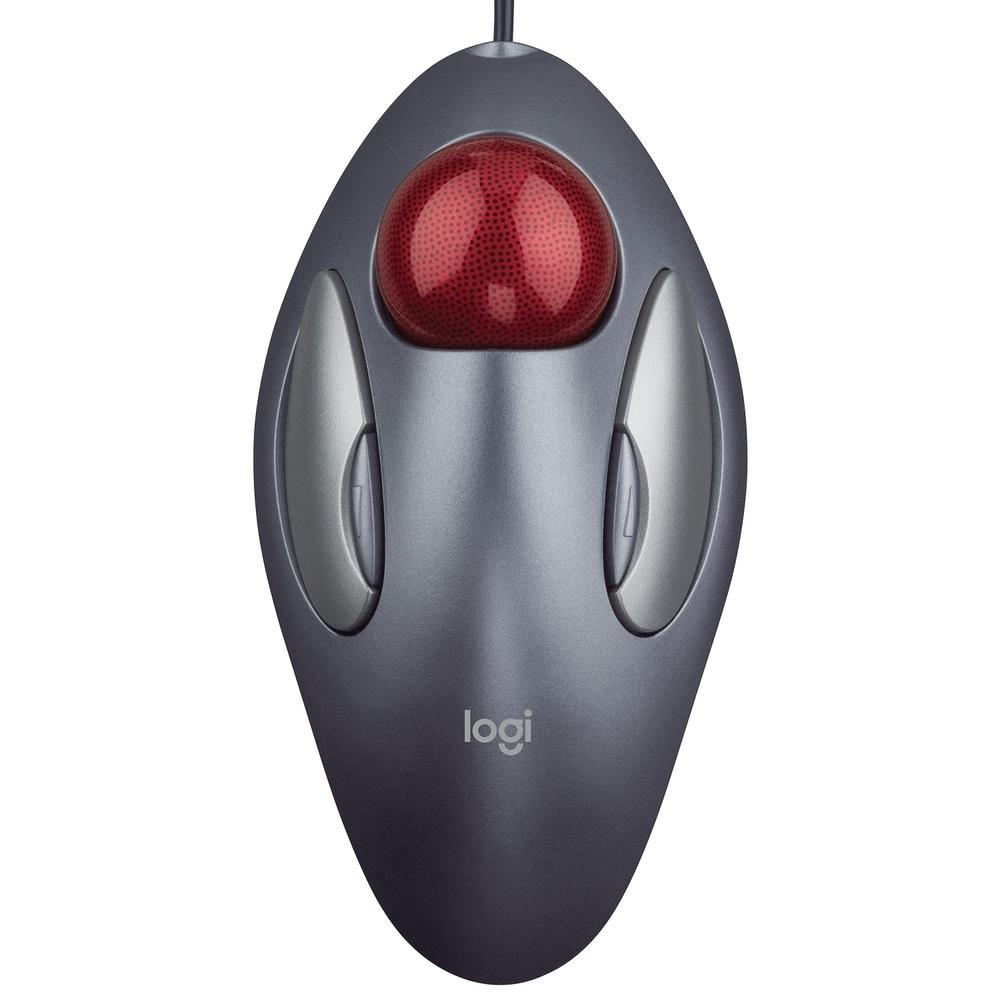
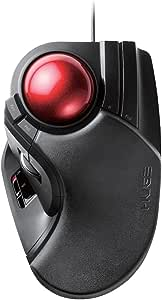

Victor Cordeiro 2023 - ©Todos os direitos reservados
Trabalho acadêmico sem fins lucrativos
Modelos Convenvionais
Formato de Mouse com o Trackball lateral da Logitech R$334,90
Mouse trackball da Delux R$323,46
Mouse Trackball da Kengiston R$375,32
Mouse da Logitech mais próximo do que conhessemos R$334,00
Modelos com Cursor na parte Superior do Mouse
Mouse da Kengiston com curos na parte superior R$359,40
Mouse da Kengiston as teclas mais aparentes
Mouse da Logitech com cursor na parte superior R$219,99
Mouse da Huge com teclas de navegação R$289,42
Victor Cordeiro 2023 - ©Todos os direitos reservados
Trabalho acadêmico sem fins lucrativos